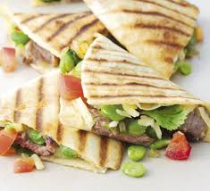

“There is absolutely no substitute for the best. Good food cannot be made of inferior ingredients masked with high flavor. It is true thrift to use the best ingredients available and to waste nothing.” James Beard
Succulent roast topside of beef, made especially irresistible with a mustard crust, piquant shallots and red wine enriched gravy
 The whole family will enjoy this hand-held supper for a quick TV dinner.
“I’m going to break one of the rules of the trade here. I’m going to tell you some of the secrets of improvisation. Just remember—it’s always a good idea to follow the directions exactly the first time you try a recipe. But from then on, you’re on your own.” James Beard
Keep these nutty chicken satay strips in the fridge for a healthy choice when you're peckish. The chicken is served with cucumber and sweet chilli sauce.
The crowd-pleasing flavour of a Caesar salad with crispy-coated chicken schnitzels. Chicken breasts and our delicious dressing make an ideal dinner for two
A showstopping pork dish that's a great Sunday lunch for a crowd, the trim from the rack makes a flavourful stuffing, infused wtih wild garlic or use a combination of spinach and garlic
 Enjoy these pork medallions with a creamy mushroom and madeira sauce. Serve with mashed potato and wilted greens for an easy midweek meal
Enjoy these pork medallions with a creamy mushroom and madeira sauce. Serve with mashed potato and wilted greens for an easy midweek meal